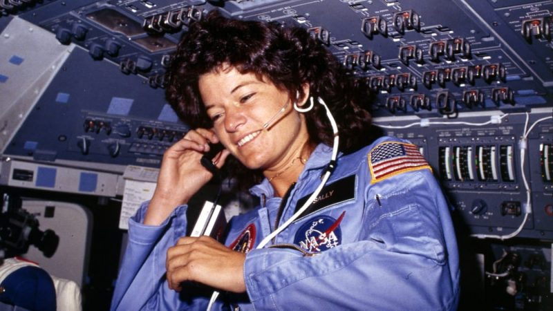
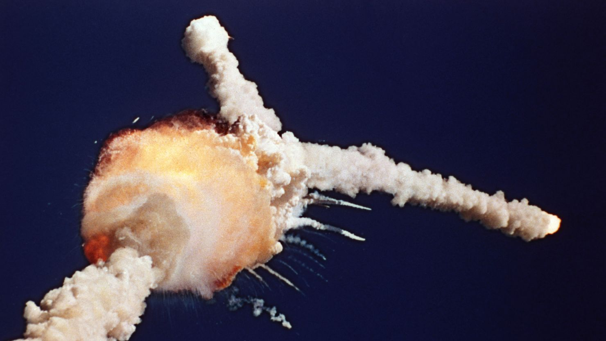
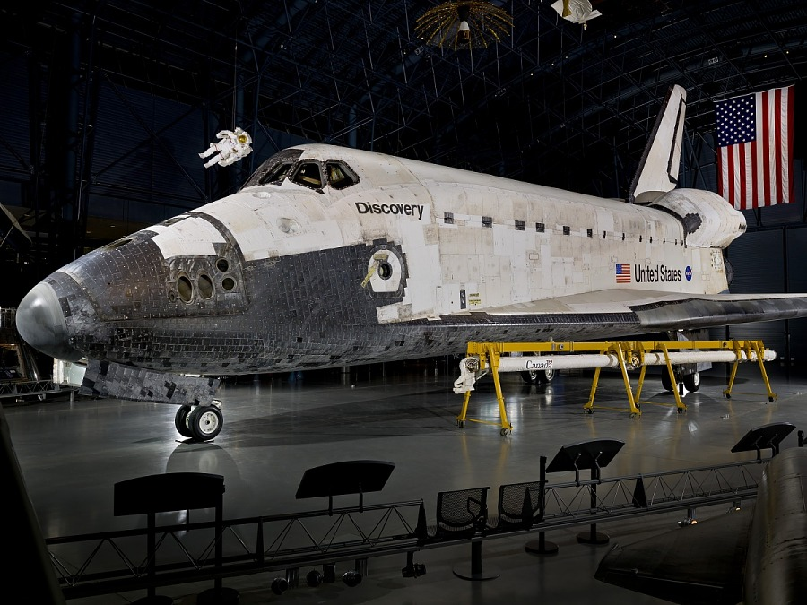

Columbia
April 12th, 1981
Sally's Flight
June 18th, 1983

MMU Spacewalks
February 3rd, 1984
Satellite Repair
April 6th, 1984
7 Person Crew
October 5th, 1984
Satellite Retrieval
November 8th, 1984
Challenger
January 28th, 1986

Discovery
September 29th, 1988
